内容要点
12 分钟 Lightroom「颜色分级」教学：把三色轮上的点位理解成色轮和谐形状，用「3Y Line Tri」记住四点组合、Y/外形、直线、三角形四种形态，再配合「先主导影调、中间调最后」的顺序，以及 Shift/Command 锁轴、明亮度与混合平衡，让调色从乱拖变成有方向。
知识结构
色轮来回拖却总想重置；色轮点位形状可对应配色方案。
先调占主导的高光/阴影，中间调永远最后；直线形成单色和谐。
Shift 锁色相调饱和；Command/Ctrl 锁饱和调色相。
明亮度压暗阴影；混合控制过渡；平衡偏高光或阴影色。
顺着原片倾向选色，三点分向拉开；过重色用锁饱和微调色相。
主导色已很强时，先把阴影锚到互补方向，再完成分裂互补。
3Y Line Tri 四形回顾；调色只是修图流程一步。
先想形状、再选主导影调、中间调最后；用锁轴快捷键与明亮度/混合/平衡收口，避免「滤镜感」乱拖。
00:00-00:50乱拖色轮的痛点与形状记忆法
主讲人开场说自己一直用一个「特别简单甚至有点蠢」的小技巧，彻底改变了对 Lightroom 调色的理解——只要记住「3Y Line Tri」规则，就不用再靠猜。
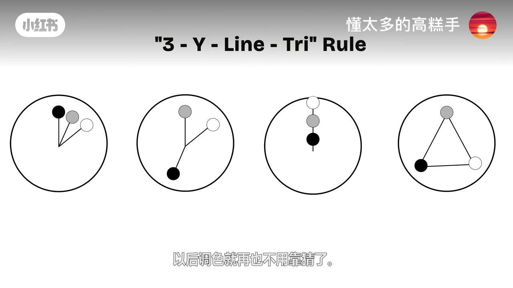
他承认在颜色分级里分别为中间调、阴影、高光加点色时，常常毫无方向地来回拖，好不容易调出还行的效果，看一会儿又想全部重置。
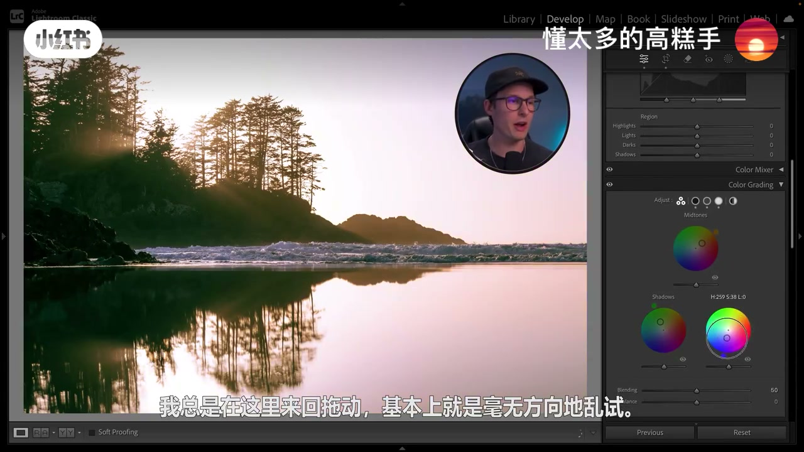
后来想通：这些色轮和配色方案里的色轮点位其实一样——只要记住色轮上摆出的形状，就能找到适合照片的配色。他刻意记四种形状：三点组合、直线、外形（Y）和三角形。
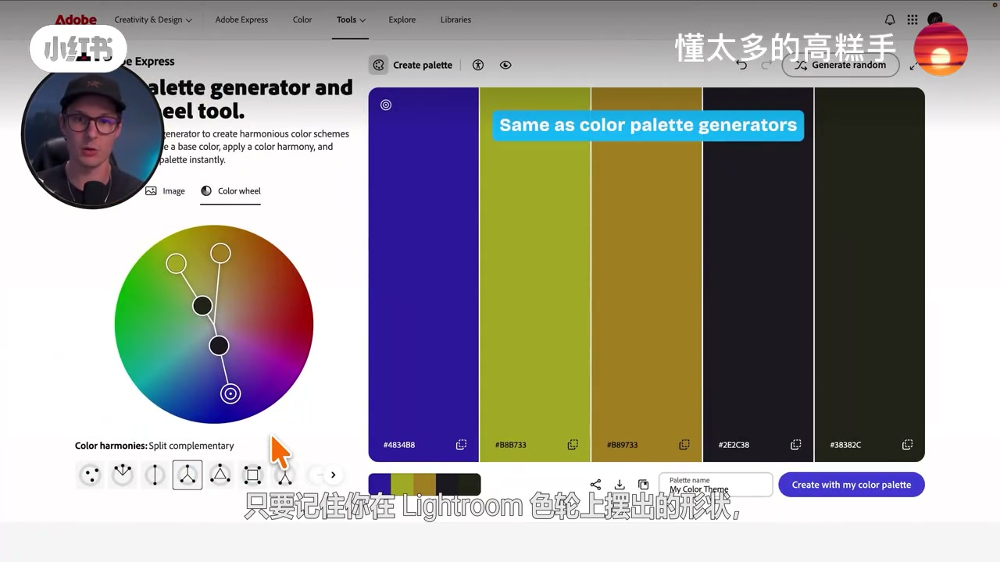
00:50-02:20直线形：先主导影调、后中间调
回到 Lightroom，海岸日落片他打算试直线形，把画面往西洋暖色引导。关键顺序：先从画面中占主导地位的影调范围开始——这张他认为高光最突出，所以先调高光色轮；中间调永远留到最后。
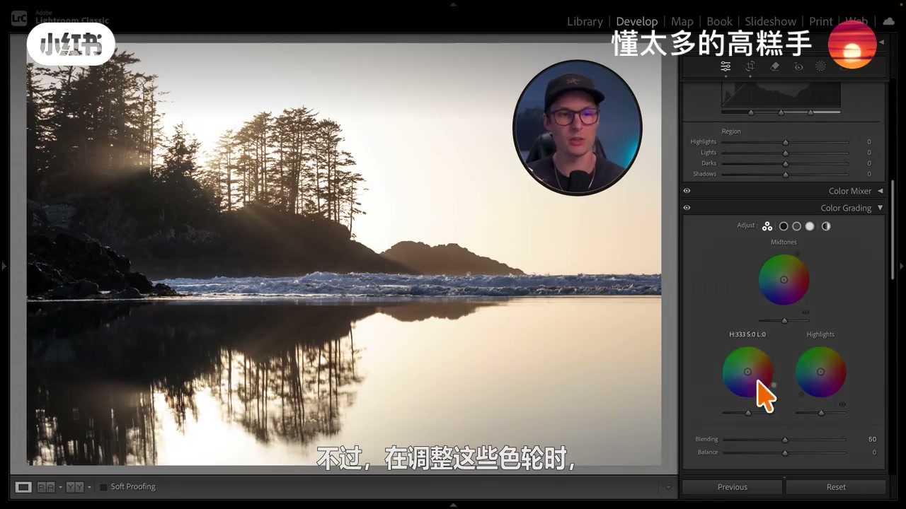
直线规则本质是单色配色：不必死记名词，只要让三个点位排成一条直线、彼此协调即可。
02:20-03:40色轮快捷键：Shift 与 Command
色轮原理：越靠中心越不饱和，越靠边缘饱和度越高。按住 Shift，指针锁定在饱和度方向，色相不变只调强度；想改色相且保持饱和度，按住 Command 或 Ctrl，会出现圆形轨迹。
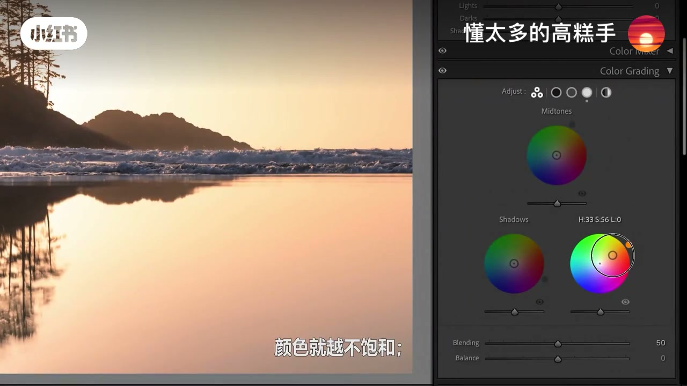
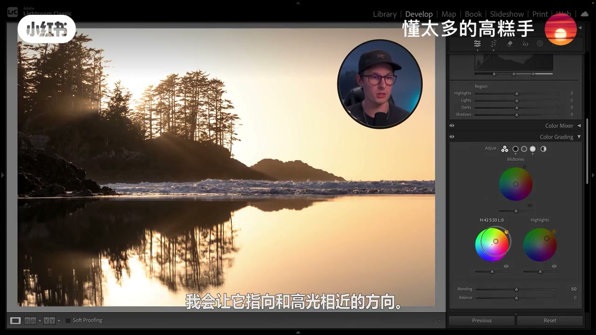
阴影方向与高光相近时，同样可用 Shift 锁色相再调饱和；中间调最后补上，完成直线形。
03:40-05:10明亮度、混合与平衡
有时加点色后像套了层滤镜、整片发白发灰。这时用各影调色轮下方的明亮度滑块，压低阴影亮度，让颜色更「沉」而不改色相。
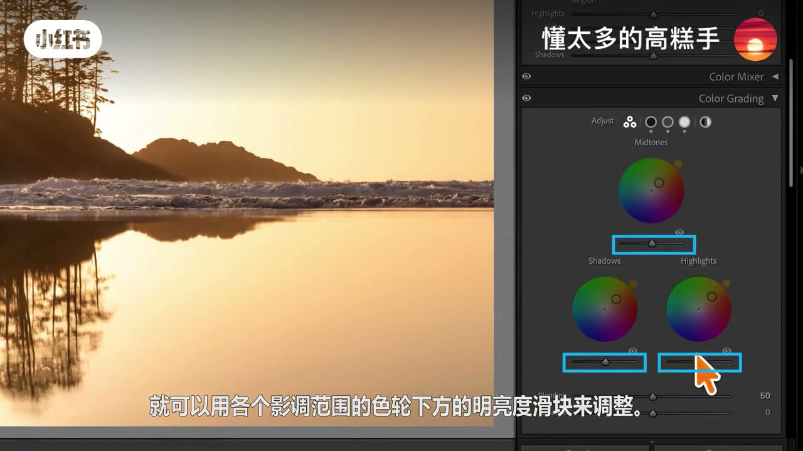
混合滑块控制三色轮颜色过渡融合的快慢；直线形时变化不大，跨色相时更明显。平衡滑块则让整体更偏高光色或阴影色。前后对比打开关闭，形状思路一下就清楚了。
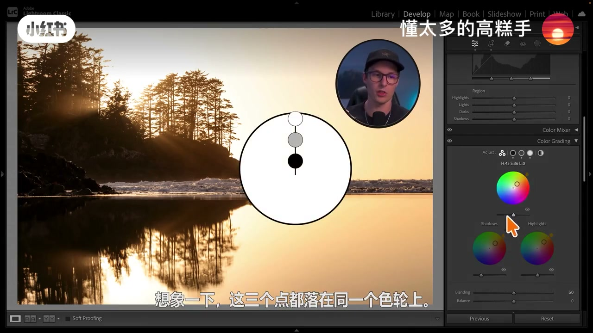
05:10-08:00三角形配色实战
第二张秋树林片已做过基础与少量 HSL，进入颜色分级收尾。这次用三角形：仍先从主导影调（高光）入手，并尽量顺着原片已有的绿黄倾向，而不是硬撞对立色。
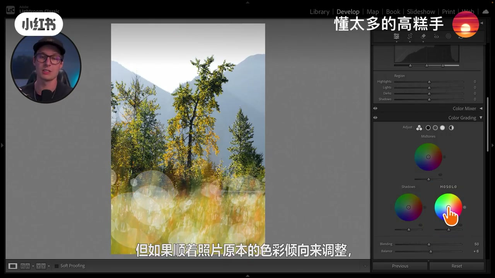
阴影可往粉红或青绿两头走；他选偏粉，再让中间调补三角形另一边。完成后可在色轮间来回微调饱和。若某色过重，定位对应顶点，Command 锁饱和微调色相，再配合明亮度与混合/平衡收口。
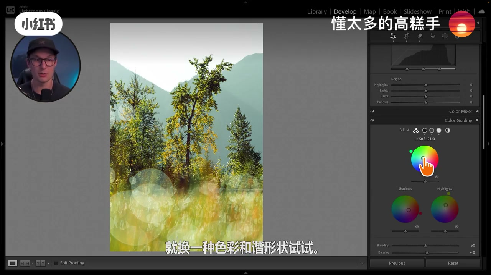
08:00-10:40Y 形分裂互补
第三张湖面：高光已有非常突出的蓝色主导色。这时他改用「外形/Y」思路——先把阴影锚到主导色的相反方向（橘红），再在青绿/深蓝一侧选点完成分裂互补，中间调补上 Y 的另一叉。
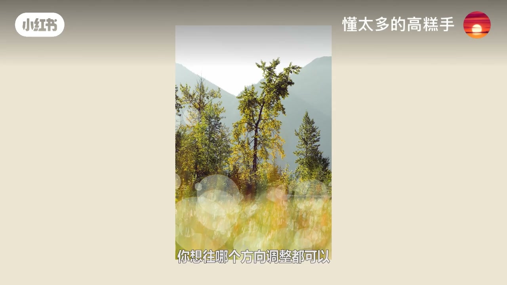
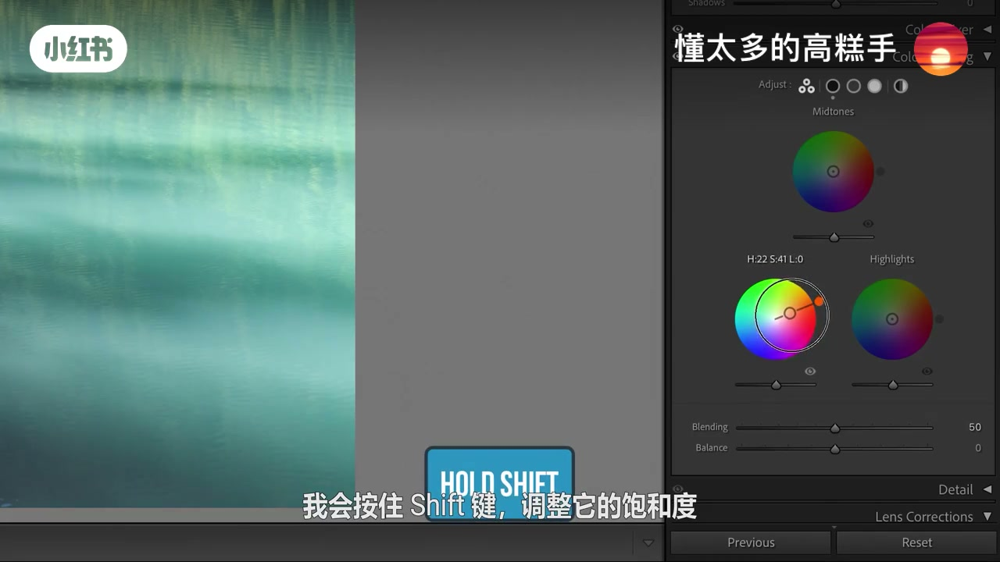
若过饱和，可少加色甚至跳过某个影调。开关对比时，氛围会明显不同，但仍是在强化画面原有元素，而不是硬贴滤镜。
10:40-12:203Y Line Tri 回顾
收束：在色轮上用三个点摆出形状——三点组合、外形/Y（一侧两色一侧一色）、直线（同角度单色轴）、三角形（三影调分向）。他称之为「3Y Line Tri」，方便记住四种核心形状。调色只是修好一张照片的一步；片尾导流到同账号的 Lightroom 大师班（以置顶评论为准）。